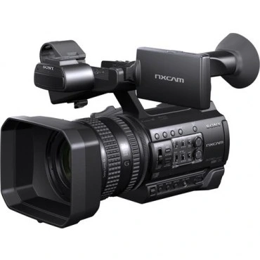

Step 1
Remove lens cover.
More instructions.

by Luling Huang,
Remove lens cover.
More instructions.
Turn on power switch.
More instructions.
Unfold the LCD viewer screen.
More instructions.
Set video recording format.
More instructions.
Set audio recording format.
More instructions.